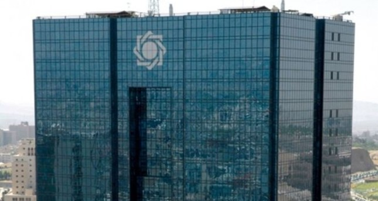
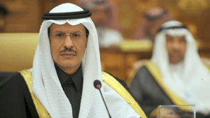

US Imposes New Sanctions on Iran’s Central Bank

The high tensions between the US and Iran are undoubtedly continuing to soar.In his latest move, US President Donald Trump on Friday announced that the United States had imposed new sanctions on Iran’s Central Bank.
Trump’s move comes barely a week after drone attacks on two major oil plants in Saudi Arabia.Both Riyadh and Washington strongly suspect that Tehran was squarely behind the attacks.Trump on Friday did not, however, provide further details on the sanctions.
The president said these are the harshest sanctions that have ever been imposed on a country by the US.'We have just sanctioned the Iranian national bank,' Trump announced to news reporters in the Oval Office.'These are the highest sanctions ever imposed on a country,' he added.Asked about possible military action against Iran, Trump responded that the US is always ready and that military action is always an option.
Donald Trump’s government vowed to deal with Tehran after the US blamed Iran over last weekend attacks on Saudi Arabia’s oil plants, which immediately led to the skyrocketing of crude oil prices globally.In an apparent elaboration on Trump’s remarks, the US Treasury Department explained that the authorization of sanctions on Iran’s central bank is not only because of Tehran’s nuclear program but also because of its support for and sponsorship of terrorism.
'Iran’s brazen attack against Saudi Arabia is unacceptable,' Steven Mnuchin, the US’s Treasury Secretary stated.'Treasury’s action targets a crucial funding mechanism that the Iranian regime uses to support its terrorist network, including the Qods Force, Hezbollah and other militants that spread terror and destabilize the region,' Mnuchin added.
Iran insists it wasn’t behind the oil plants attacks
Iran has denied any involvement in the September 14 attacks.Meanwhile, Saudi Arabia’s Minister of Energy, Prince Abdulaziz bin Salman, announced at a press conference in Jiddah that production at the two plants is expected to resume to their full capacity by the end of September.
This means that the desert state’s oil production will go back to it’s pre-attack levels, and it will once again be able to produce about 11 million barrels of oil daily.At a press conference on Wednesday, Saudi Defense Ministry spokesman Turki al-Maliki announced that the attacks were 'undoubtedly' orchestrated by Iran and its military.
At the press conference, al-Maliki presented wreckage from missiles that, according to the Kingdom, prove that Iran was involved in Saturday’s attack.A total of 18 drones and seven cruise missiles are believed to have been used to orchestrate the malicious attacks.
[bsa_pro_ad_space id=4]
Share on Facebook Tweet Follow us
Posted On: 2019-09-21T00:00:00
Posted By: Vincent Ferdinand




Content Date: 2019-09-21
Download Date: 2021-07-09
Document ID: L0C04EL29